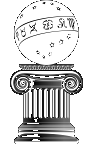
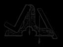
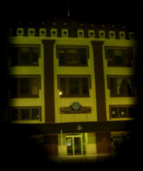
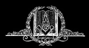

KING DAVID'S LODGE NO. 209
F. & A.M.

May Brotherly Love Prevail & Every Moral & Social Virtue Cement Us
HOME PAGE Freemasonry History of the Lodge Officers, Chairmen, & Past Masters Directory Trestleboard

A Brief History of King David's Lodge No. 209
On May 16, 1861, a Masonic Lodge was chartered in San Luis Obispo with the title of San Luis Obispo Lodge #148. Due to the drought of 1862-1864, the Lodge had to surrender its charter. All records of this Lodge were lost in the San Francisco fire of 1906. Masonry expanded in the County when San Simeon Lodge #196 was chartered December 12, 1869.
The need for another lodge in the county was felt when a number of Masons met at the funeral for Alexander Murray in May 1870. They took necessary steps for forming a Lodge in San Luis Obispo and King David's Lodge #209 was the result. Its charter dated October 13, 1870.
In its early years, King David's Lodge had its share of troubles and problems. These were caused by great differences in background and temperament of the brethren; post-Civil War allegiances and feelings; and, of course, ever-present money difficulties. They were rough days.
Increasing population of San Luis Obispo and growth in membership of the Lodge made it necessary to find suitable facilities for a meeting place. Several locations were utilized over the years, finally settling on the present location at 859 Marsh Street. The Hall Association and the Lodge built its present building at a total equipped cost of $57,093.16. The building was dedicated December 19, 1913.
Some years ago, interest was felt in selling the present property and erecting a new building at the edge of town where parking would be less of a problem. After discussion and consideration, it was decided that the brothers loved this building and it was decided to retrofit it for earthquake and fire resistance. This was done and we continue to occupy the building at 869 Marsh Street.
The Lodge has had a continuing involvement in the affairs of the city. As an example, it has taken Hawthorne School under its wing, doing some tutoring of students in reading and helping financially from time to time. Recognition of police and fire departments in appreciation of their services is done regularly.
King David's Lodge continues to be a factor in the community of San Luis Obispo, and we welcome new members who will help us to continue our work.
On January 1, 2005, Estero (Morro Bay) lodge consolidated with King David's, bringing more members into the No. 209 F. & A.M.
HOME PAGE Freemasonry History of the Lodge Officers, Chairmen, & Past Masters Directory Trestleboard
